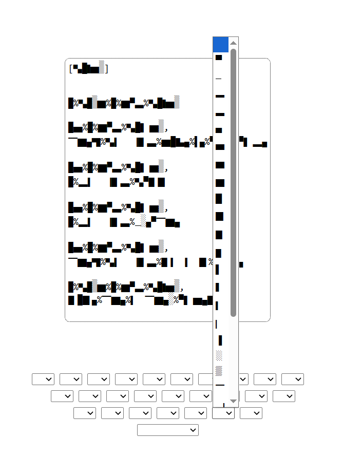

diary(net art) ‧₊˚✩彡

[to project site]This net art project is a fictional archive written from the perspective of an “angel”. All alphabet text on the website is completely illegible at first, replaced with a cipher composed of 26 different HTML block elements. A decipher key is provided at the bottom of the corner, and the user is able to input the block elements into the corresponding key position on the QWERTY layout dropdown boxes in the center of the page. When the letter is submitted, all block elements on the entire page are gradually deciphered. This project is a transgender allegory. Oftentimes, gender queer people struggle with feeling understood or accepted into broader society. This project mainly addresses the struggle of dysphoria. I wanted to represent dysphoria in two main ways. First, the illegibility of the text represents voice dysphoria: feeling like a monster that speaks words that nobody listens to, and only a select few with patience and empathy take the time to understand queer people. Second, multiple metaphors such as “wings” represents body dysphoria, conveying how it feels being born different than everyone else, and that being the reason to become shunned in society. Overall, I created this project to voice what it is like to be transgender / gender queer, and I wanted to create a work that could resonate with anyone struggling with self image, identity, and feeling seen.